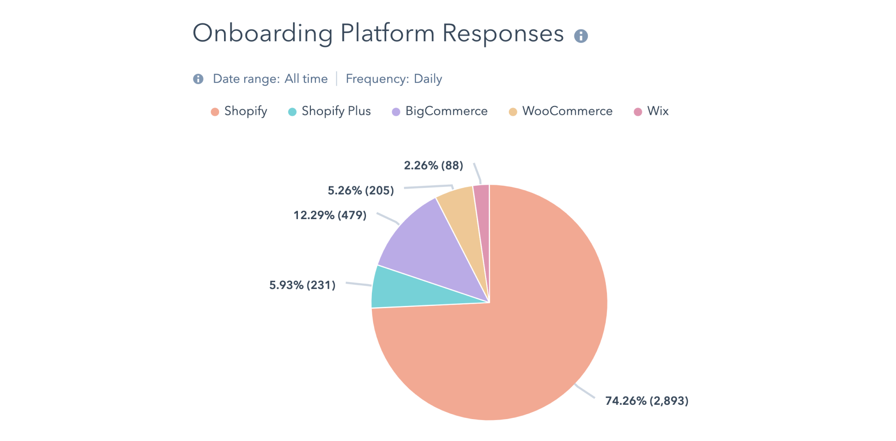
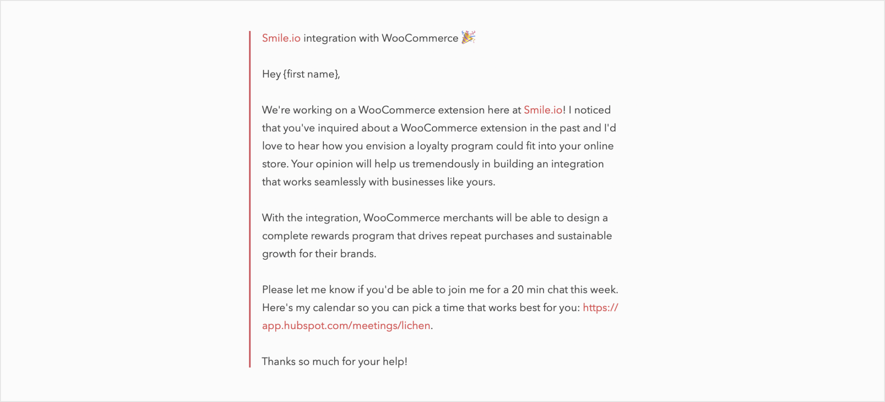
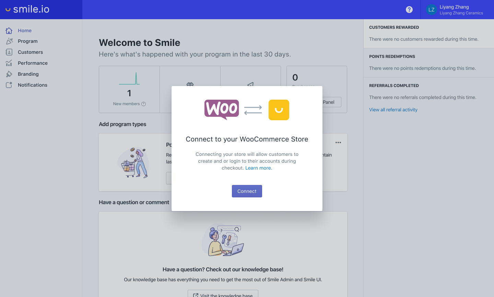

Bringing Smile to WooCommerce
Building an integration from exploration to beta
Problem
At Smile, our vision is to drive sustainable growth for every small business. One way to achieve this is by bringing Smile to more merchants, beyond those on Shopify and BigCommerce.
Opportunity
Choosing to pursue WooCommerce, over a handful of other ecommerce platforms, was influenced first and foremost by the amount of incoming demand. Every week, we had around 6-10 merchants asking about or requesting for a WooCommerce integration.
Beyond demand, my team also investigated the number of merchants that Smile could potentially be available to, if the platform served the right merchant segment (entrepreneurs and small businesses), and which other loyalty programs were already available on the platform.

WooCommerce powers 21% of all ecommerce stores worldwide. This means that the integration would make Smile available to millions of new merchants around the world. In comparison, Shopify has the 2nd largest market share at 18%.
Platform exploration
I was the lead designer for the project and worked with 3 developers, a client support lead, and a PM. I led the initial exploration of WordPress and WooCommerce, digging for answers to questions like:
- What’s the plugin store experience like?
- What's plugin installation process like?
- Which settings exists on WordPress and which exist on WooCommerce?
- What are the key similarities and differences from Shopify?
- What’s our competition like on WooCommerce? What’s the merchant and customer experience like? What’s the pricing like?
- Are there any WordPress or WooCommerce design resources?
- How will merchants find us?
To start, I quickly spun up a WooCommerce shop to start discovering the merchant and customer experience. My goal was to uncover as many unknowns as possible for my team before the project cycle started.
Merchant reach-out
Next, I contacted all the WooCommerce merchants who had contacted us about an integration over the past five months. I collected these contacts through:
- HelpScout
- Our WooCommerce integration landing page
- Our onboarding through website signups

Over two weeks, video chats were scheduled with 15 merchants. I aimed to:
- Listen to their stories.
- Understand WooCommerce merchant personas - how do they differ from those on Shopify and BigCommerce?
- Understand the nuances of WordPress and WooCommerce.
- Understand the demand for a loyalty program.
- If they’ve already built a custom integration with Smile, how did they build it?
I created a list of 30 questions, each of which probed further into each of the questions above. I also wanted to build a relationship with these merchants as they’d be the first to try our beta and give feedback.
Scope - think big, start small
The scope of our project was determined by the team after we attempted to uncover as many unknown as we could. The outcome of the build cycle was to launch a Smile beta for WooCommerce merchants. We stripped away all the current functionalities we offer and kept the essentials: points and referrals. Features that were excluded in the beta include VIP tiers, campaigns, guest referrals, etc. We wanted to focus on getting our core offering stable before adding in features.

I tried, as much as possible, to resist the temptation to create custom designs or code that deviates away from our current offering on Shopify and BigCommerce. In this way, our growth potential for scaling and expanding to other platforms would not be limited.
Collaborating with customer success, marketing, and support teams
I worked closely with the customer success, support, and marketing teams to design a seamless experience from onboarding to activation. I walked through the WordPress and WooCommerce interface and their nuances with the CS and support teams. The marketing team helped to craft our release including an official release blog post, a platform landing page, ads on social media, and email newsletters.
I also wrote a help doc on the install process, requirements for installation, customer account creation, and how to leave feedback. 💬
Beta release 🎉
We planned to release our plugin in two phases: beta and official release. Our goal with the beta is to learn as quickly as we can and adjust for any hiccups we encounter. That means that we need to get as many beta installs as possible to collect data and feedback from merchants.
For the beta release, we decided that the installation process would be through a .zip file to download through our site and then upload to WordPress. This was the fastest way we could make our beta available for installation while continuing to give us flexibility in releasing new updates as we iterate. Once we’ve released the beta, we'd aim to get listed on the WordPress Plugin Marketplace to increase exposure and increase our rate of installs.

Measuring success
We identified the metrics that we'd be tracking following the beta release. Most of them will translate to the official release as the new baseline metrics to beat. Since we didn’t have any baseline metrics for the WooCommerce beta release, we extrapolated using Shopify as a proxy.
These metrics and contact information are tracked on Metabase, Mixpanel, Google Analytics, and HubSpot.
- Install rate: we took the number of installs we expected based on the traffic and signups on our WooCommerce integrations landing page, website onboarding, and emails (inbound with no marketing). Using this number, we then projected the number of installs we would have with additional marketing.
- Churn rate: once they sign up we wanted to see how many merchants would continue to sign in to Smile, 1, 4, and 9 months after installing the plugin.
- Meaningful feedback: we wanted to open an immediate channel of communication between us and our beta testers so that we could iterate as many times as possible.
On Mixpanel, we'd tracked how our WooCommerce merchants would move through different flows and identify where the greatest amount of friction or drop-off occurs.
I also created a plan upgrade page to surface the number of merchants interested in plan and feature upgrades. The CTA, "Let's talk" opens HelpScout to continue the conversation with our team.